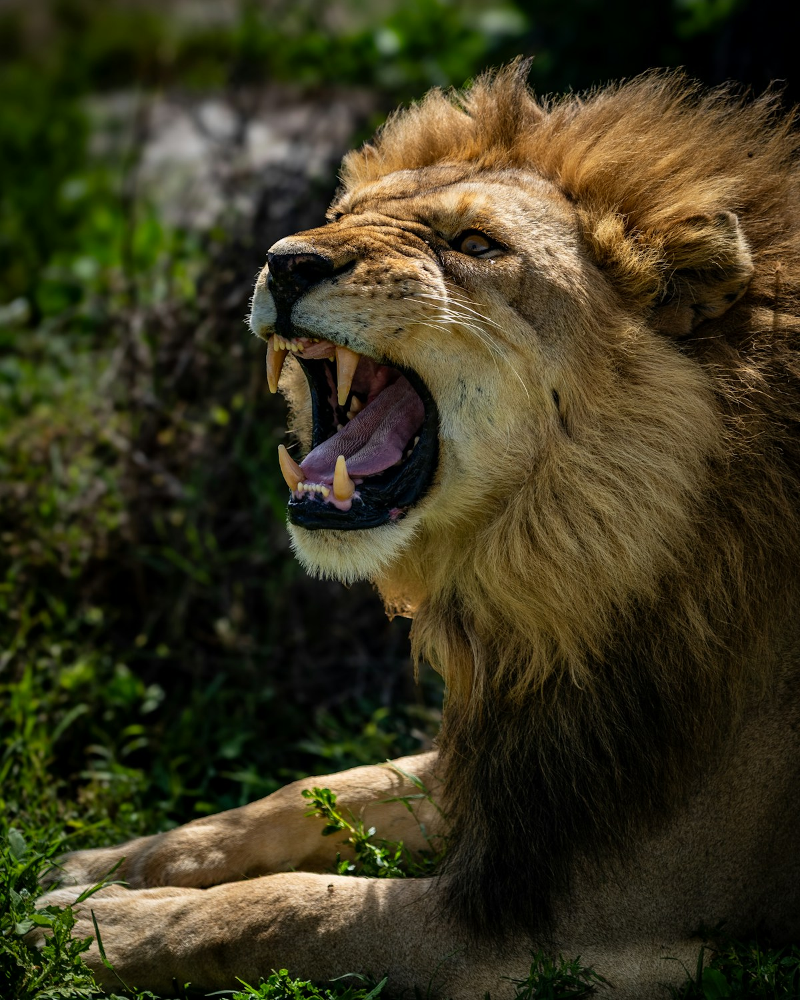
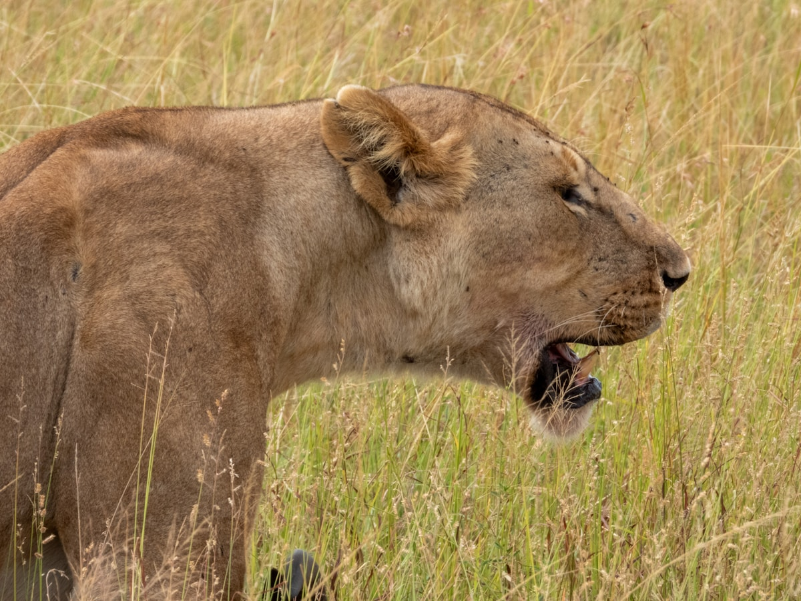
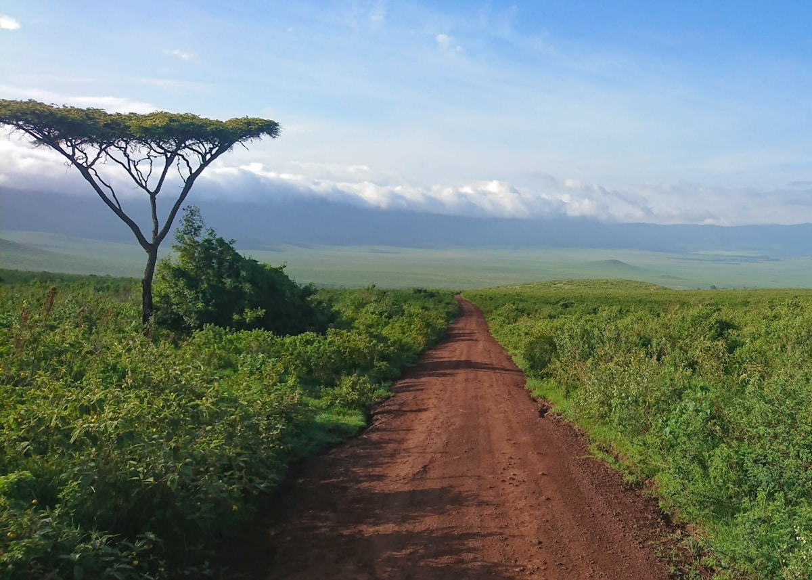
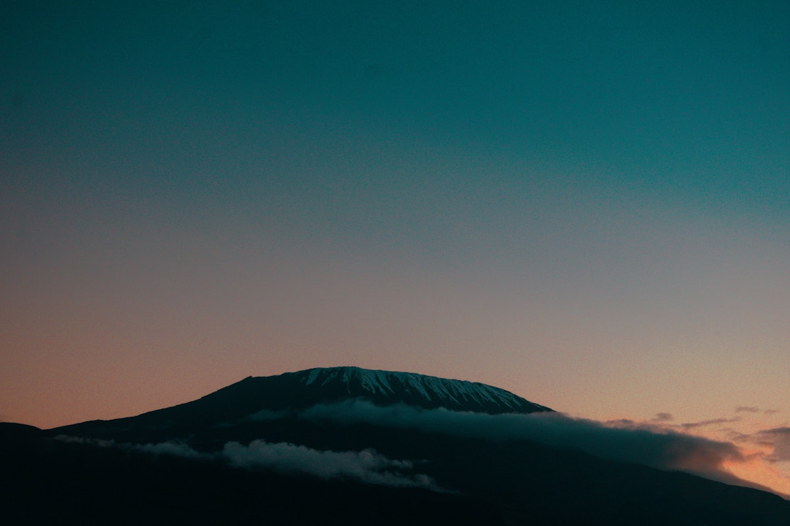
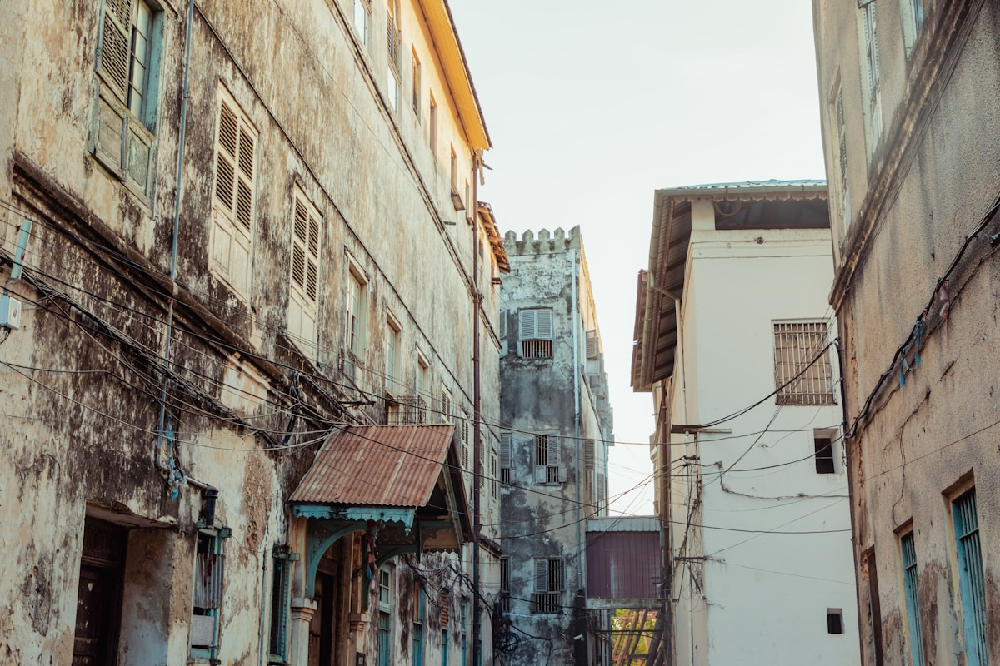
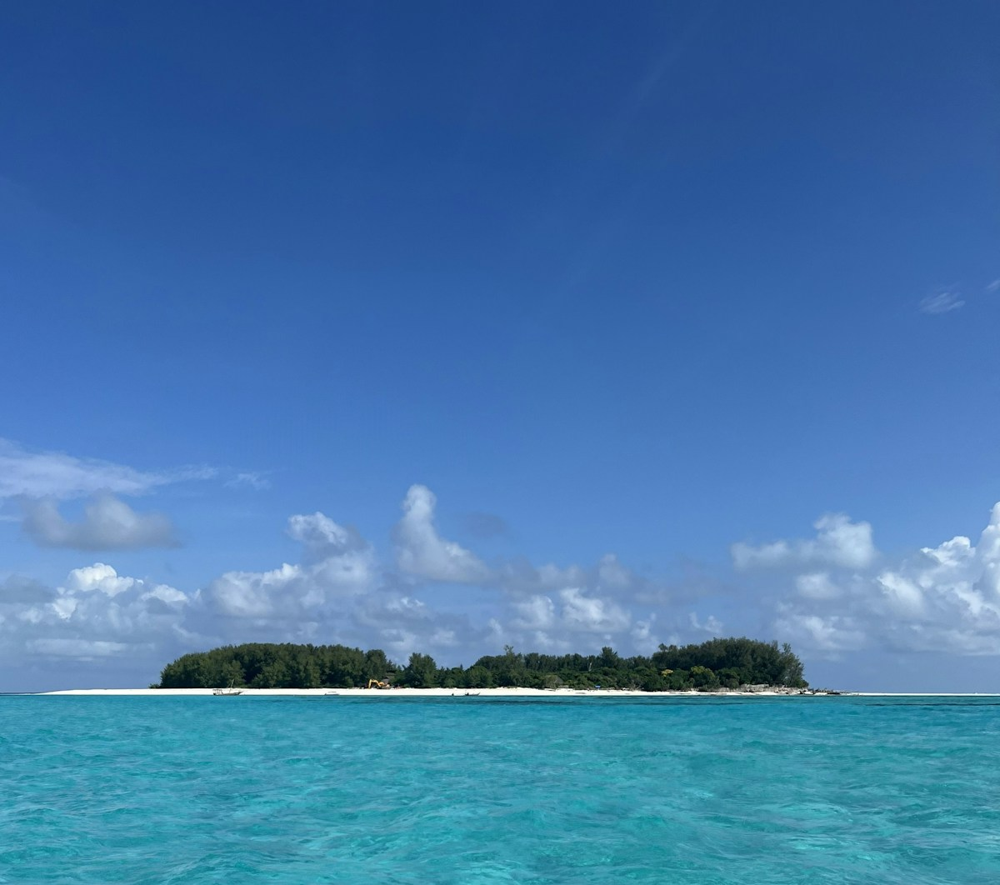
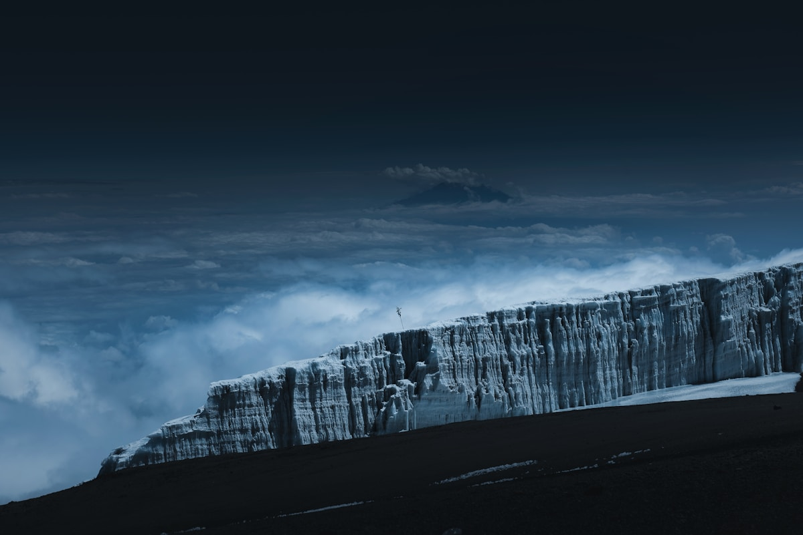
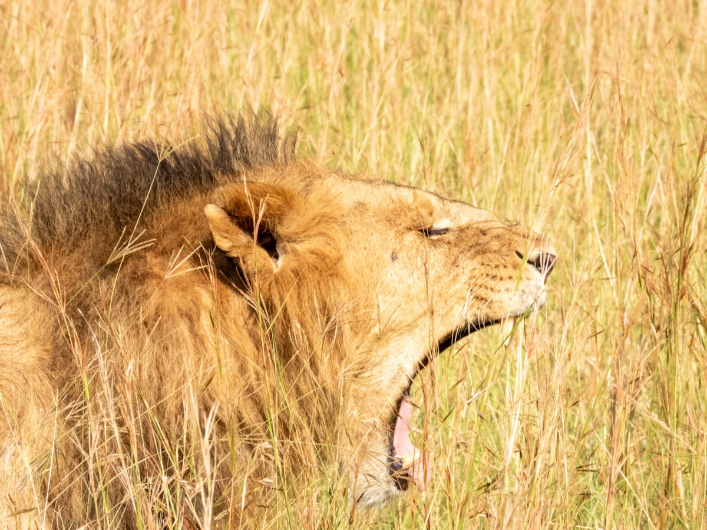

| 事项 | 结论 |
|---|---|
| 事项 | 结论 |
| 签证 | 中国护照可落地签 $50（约 350 元，停留最长 30 天），或出发前在线申请电子签 visa.immigration.go.tz；入境备好返程机票 |
| 黄皮书（硬性） | 经亚的斯亚贝巴转机即涉黄热病流行区，须持小黄本（国际疫苗接种证书），出发前≥10 天接种 |
| 推荐方案 | 达累斯萨拉姆 → 阿鲁沙 → 塞伦盖蒂 → 恩戈罗 → 莫希/乞力马扎罗 → 桑给巴尔，12 天草原+火山+海岛 |
| 返程约束 | 桑给巴尔/达累经亚的斯亚贝巴转机回京（全程约 16h）；桑给巴尔→达累国内段约 1h |
| 预算（人均） | 经济 20000–30000 ／ 标准 40000–60000 ／ 舒适 80000–120000（人民币） |
| 三件提前事 | ① 电子签或落地签材料 ② 订 Safari 越野车与营地（旺季提前 3–6 个月）③ 备美元现金付门票 |
| 季节提醒 | 6–10 月旱季最佳（塞伦盖蒂北部大迁徙）；4–5 月长雨季不推荐；12–2 月桑给巴尔海滩最舒服 |
| 支付 | 美元现金为主（门票/小费），信用卡大额可用；当地 M-Pesa/Airtel Money 移动支付 |
以下为 12 天 11 晚的推荐节奏：北线 Safari 按「阿鲁沙出发环线」推进，最后飞桑给巴尔海岛收尾。每日主景点 ≤2 个，Safari 全程 4×4 越野车 + 司机兼向导。
| 日期 | 行程 | 过夜地 | 主题 |
|---|---|---|---|
| D1 抵达累 | 北京✈亚的斯亚贝巴✈达累斯萨拉姆（约 16h），海滨休整 | 达累斯萨拉姆 | 抵达+预热 |
| D2 | 达累✈阿鲁沙（1h），市集 + 咖啡庄园 | 阿鲁沙 | Safari 之都 |
| D3 | 阿鲁沙一日：阿鲁沙国家公园（火烈鸟/长颈鹿）+ 文化博物馆 | 阿鲁沙 | 城市探秘 |
| D4 | 阿鲁沙→塞伦盖蒂（约 6h），黄昏日落游猎 | 塞伦盖蒂 | 转场+初猎 |
| D5 | 塞伦盖蒂全天：中央平原五大兽 | 塞伦盖蒂 | 游猎日 |
| D6 | 塞伦盖蒂北部：格鲁梅蒂河大迁徙 | 塞伦盖蒂 | 大迁徙日 |
| D7 | 塞伦盖蒂→恩戈罗恩戈罗（约 3h），火山口边缘全景 | 恩戈罗 | 转场日 |
| D8 | 恩戈罗恩戈罗火山口全天（含下坑 $295/车） | 恩戈罗 | 火山口日 |
| D9 | 恩戈罗→莫希（约 4h），乞力马扎罗山脚咖啡园 | 莫希 | 雪山初见 |
| D10 | 乞力马扎罗山脚一日：马兰古线徒步 + 温泉 | 莫希 | 山脚徒步 |
| D11 | 莫希（JRO）✈桑给巴尔，下午石头城 | 桑给巴尔 | 石头城日 |
| D12 返程 | 努恩圭海滩上午 → 桑给巴尔✈达累✈亚的斯✈北京 | — | 收尾 |
以下为 12 天全程的逐小时执行时间线，可当作「当天打开照着走」的清单。标注 ※ 的可选项视体力与天气取舍。
| 时间 | 事项 |
|---|---|
| 00:10–07:15 | 北京✈亚的斯亚贝巴（ET605 约 11.5h） |
| 09:00–13:00 | 亚的斯亚贝巴✈达累斯萨拉姆（约 4h），入境：落地签 $50（或电子签）+ 黄皮书 + 指纹 |
| 14:00–15:30 | 换汇（1 元≈330 TZS）+ 办电话卡 + 入住 Oyster Bay 海滨酒店 |
| 16:00–18:00 | Msasani 半岛海滨大道漫步，印度洋日落 |
| 19:00 | 海鲜晚餐（烤鱼/龙虾） |
| 时间 | 事项 |
|---|---|
| 07:30–08:30 | 国内航班：达累斯萨拉姆✈阿鲁沙（约 1h，Precision Air/坦桑尼亚航空 $120–180） |
| 09:00–10:30 | 抵达阿鲁沙机场，接机入住酒店 |
| 10:30–12:30 | 阿鲁沙镇漫步：Maasai 市集、独立大道咖啡店 |
| 13:00–14:00 | 午餐（斯瓦希里菜） |
| 15:00–18:00 | 梅鲁山脚咖啡种植园参观 + 咖啡品鉴 |
| 18:00 | 入住庄园酒店，晚餐 |
| 时间 | 事项 |
|---|---|
| 08:00–12:00 | 阿鲁沙国家公园（门票 $45）：火烈鸟、长颈鹿、黑脸长尾猴，梅鲁山雪峰背景 |
| 12:00–13:00 | 公园野餐 |
| 14:00–16:00 | 返回镇区：文化遗产中心 / 坦桑尼亚国家博物馆（可选） |
| 16:30–18:00 | 市集购物：坦桑蓝宝石、木雕、咖啡豆 |
| 18:30 | 晚餐：尼亚玛乔马炭烤烤肉 |
| 时间 | 事项 |
|---|---|
| 07:00–12:00 | 阿鲁沙→塞伦盖蒂（约 6h，经恩戈罗恩戈罗高地，途经纳比门） |
| 12:00–13:30 | 塞伦盖蒂 Gate 买票（$83/人/天），入园 |
| 14:00–15:00 | 入住营地（塞罗内拉中央平原），午餐 |
| 16:00–18:00 | 日落 Game Drive：狮子、象群、长颈鹿 |
| 18:30 | 营地晚餐，草原星空 |
| 时间 | 事项 |
|---|---|
| 06:30–10:00 | 清晨 Game Drive：狮子、花豹、猎豹，捕猎黄金时间 |
| 10:00–11:30 | 营地早餐休息 |
| 11:30–13:00 | 中央平原游猎：角马 + 斑马大群，秃鹳 |
| 15:00–18:00 | 下午 Game Drive：河马池、鳄鱼、水牛群 |
| 18:30 | 营地晚餐 |
| 时间 | 事项 |
|---|---|
| 06:30 | 打包野餐盒，出发前往北部（格鲁梅蒂河/马拉河，约 3h 车程） |
| 10:00–12:00 | 大迁徙观察：7–10 月角马过河最壮观 |
| 12:00–13:00 | 河边野餐 |
| 15:00–18:00 | 北部平原游猎：秃鹫聚集地附近常有狮群 |
| 18:00 | 返回营地，晚餐 |
| 时间 | 事项 |
|---|---|
| 08:00–08:30 | 早餐后退房 |
| 08:30–11:30 | 塞伦盖蒂→恩戈罗恩戈罗保护区（约 3h，过纳比门） |
| 12:00–13:30 | 入住火山口边缘酒店（海拔约 2300m），午餐 |
| 14:00–16:00 | 火山口边缘观景台：俯瞰 2600m 深的天然剧场 |
| 16:30–18:00 | 恩戈罗游客中心：野生动物历史展 |
| 18:30 | 酒店晚餐 |
| 时间 | 事项 |
|---|---|
| 06:30–08:00 | 下火山口（车辆费 $295/车/次，按车不分人数），600m 陡坡盘山 |
| 08:00–12:00 | 火山口底部 Game Drive：黑犀牛、大象、狮子、角马 |
| 12:00–13:00 | 马加迪湖畔野餐（火烈鸟） |
| 14:00–16:30 | 继续游猎：河马池、水牛群、豺狼 |
| 16:30 | 出火山口，返回酒店 |
| 时间 | 事项 |
|---|---|
| 08:00–08:30 | 早餐后退房 |
| 08:30–12:30 | 恩戈罗→莫希（约 4h，穿过卡拉图镇） |
| 13:00–14:00 | 莫希午餐 |
| 14:30–16:30 | 乞力马扎罗山脚 Arabica 咖啡园参观 + 品鉴 |
| 16:30–17:30 | 马兰古线入口（Marangu Gate）仰望雪峰 |
| 18:00 | 入住莫希酒店，晚餐 |
| 时间 | 事项 |
|---|---|
| 08:00–12:00 | 马兰古线半日徒步（雨林段，约 4h，海拔 1800–2300m），向导陪同 |
| 12:00–13:00 | 野餐 |
| 14:00–17:00 | 奇尼瀑布（Kikuletwa Springs）温泉游泳，咖啡品鉴 |
| 17:30 | 返回莫希，晚餐 |
| 时间 | 事项 |
|---|---|
| 08:00–09:00 | 莫希→乞力马扎罗国际机场（JRO，约 1h 车程） |
| 10:00–11:15 | JRO✈桑给巴尔（约 1h15m，$120–180） |
| 12:00–13:30 | 石头城午餐（海鲜 + 椰子饭） |
| 13:30–17:00 | 石头城漫步：老城堡、奇迹屋、香料市场、鱼市，可请向导（$15–25/2h） |
| 18:00 | Forodhani 夜市小吃 + 滨海日落 |
| 时间 | 事项 |
|---|---|
| 08:00–09:00 | 出发前往北岸努恩圭海滩（约 1h） |
| 09:30–12:00 | 白沙滩漫步 + 浮潜（Mnemba 珊瑚礁可选约 $50） |
| 12:00–13:30 | 海鲜午餐，最后血拼当地香料/工艺品 |
| 14:00–15:00 | 回石头城机场 |
| 16:30–17:30 | 桑给巴尔✈达累斯萨拉姆（约 1h） |
| 18:30–次日 | 达累✈亚的斯亚贝巴✈北京，次日抵京 |
必去（必去）/ 顺路（顺路）/ 可跳过（可跳过）。

必去
必去
必去
必去
必去
顺路
顺路图片为 Unsplash 主题图（塞伦盖蒂狮子与角马、恩戈罗火山口、乞力马扎罗雪峰、桑给巴尔石头城与海滩均为坦桑尼亚实景），用于页面配图。更多免费景点：达累斯萨拉姆国家博物馆、阿鲁沙文化遗产中心、桑给巴尔监狱岛。
点击左侧节点可在地图上定位；点击地图 marker 会高亮对应节点。坐标为 WGS-84 转 GCJ-02 纠偏后标注。
以下为单人、不含购物的估算，人民币计价；出发地基准北京。汇率按 1 元 ≈ 330 坦桑先令（TZS）估算。Safari 越野车与营地按2 人拼车计算，下坑费 $295/车按 2 人分摊。往返机票按淡季 6000–8000 元计。
| 项目 | 经济（20000–30000） | 标准（40000–60000） | 舒适（80000–120000） |
|---|---|---|---|
| 往返机票 | 转机 6000–8000 | 转机 9000–13000 | 商务/灵活 18000–25000 |
| 住宿（11 晚） | 城市经济酒店 + 基础营地 5000–7000 | 中档营地 + 度假村 13000–19000 | 奢华营地 + 海岛酒店 36000–60000 |
| Safari 车与司机（6 天） | 拼车 6000–9000 | 2–3 人包车 12000–18000 | 包车 + 飞入营地 28000–45000 |
| 门票 | 公园门票约 3000–4500 | 含热气球 5000–7000 | 多次游猎 + 下坑 10000–15000 |
| 餐饮（12 天） | 营地含餐 + 城市简餐 3000–4000 | 正常用餐 6000–8000 | 全包度假村 11000–18000 |
在阿鲁沙与塞伦盖蒂之间插入塔兰吉雷（$59/天）或曼雅拉湖（$59/天）各 1 天，看猴面包树象群和会爬树的狮子，总行程延至 14 天。北线经典「5 园连走」。
登顶党直接安排 6–8 天马兰古/马切姆线（$1770–2840/人），下撤后桑给巴尔 3 天休整。需整体 12–14 天，且务必留 1–2 天适应海拔；登山季避开 4–5 月雨季。
塞伦盖蒂改为乘内陆小飞机直接降落营地（约 $250–400/段），省去 6h 颠簸公路；住奢华帐篷（$1200+/晚一价全包），Safari 用车升级为全开放 Land Cruiser。人均预算 80000–120000 元档。
| 方式 | 时长 | 参考价 | 备注 |
|---|---|---|---|
| 转机（推荐） | 北京→达累斯萨拉姆 总约 16h（ET605 约 11.5h + 亚的斯亚贝巴中转 + 达累段约 4h） | 往返 6000–13000 元 | 埃塞俄比亚航空经亚的斯亚贝巴；也可经迪拜（阿联酋航空） |
| 转机（经迪拜） | 总约 18–20h | 10000–18000 元 | 中转体验更好，价格更高 |
| 内陆衔接 | 达累✈阿鲁沙约 1h / 莫希✈桑给巴尔约 1h15m | 单程 $120–180 | Precision Air、坦桑尼亚航空 |
| 区域 | 价格/晚 | 优点 | 短板 |
|---|---|---|---|
| 达累斯萨拉姆（1 晚） | 经济 300–500 / 标准 500–900 元 | Oyster Bay 海滨，过渡舒适 | 市中心交通拥堵 |
| 阿鲁沙（2 晚） | 经济 350–600 / 标准 700–1200 元 | 咖啡庄园/镇中心，Safari 集合地 | 旺季房源紧张 |
| 塞伦盖蒂营地（3 晚） | 帐篷营地 2000–3500 / 中档 4000–8000 / 奢华 12000–25000 元 | 一价全包含三餐，观兽零距离 | 旺季一床难求 |
| 恩戈罗恩戈罗（2 晚） | 火山口边缘酒店 2500–4500 / 中档 5000–9000 元 | 俯瞰火山口，星空绝美 | 海拔 2300m 夜间凉 |
| 莫希/乞力马扎罗（2 晚） | 经济 300–500 / 标准 600–1000 元 | 登山门户，气候宜人 | 旺季登山队占房 |
| 桑给巴尔（2 晚） | 经济 400–800 / 标准 900–1800 / 奢华 4000–10000 元 | 努恩圭/帕杰海滩酒店 | 北部旺季贵且需提前订 |